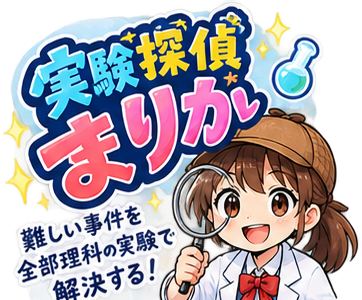

◀ あたやさいさいゲームランド

🔍 じけんファイル
探偵まりか
なぞを とく 決め手は 理科の 実験！
道具と 薬品を えらんで しらべ、わかったら「
これが答えだ！
」を おしてね。
小学3年〜6年の 理科の 実験から
◀ あたやさいさいゲームランドへ もどる
◀ ファイル
🔍
今回の ミッション
探偵まりか
1
しらべる 道具を 1つ えらぼう
↑ さきに ① で 道具を えらんでね
犯人だと 思ったら、下の「これだ？」を おそう。
道具を かえて、何度でも しらべられるよ。
これが答えだ！